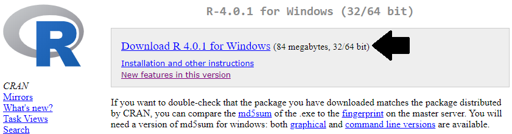
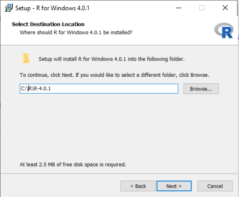
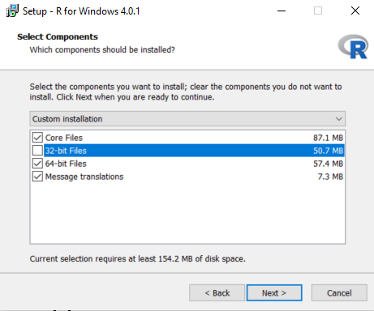
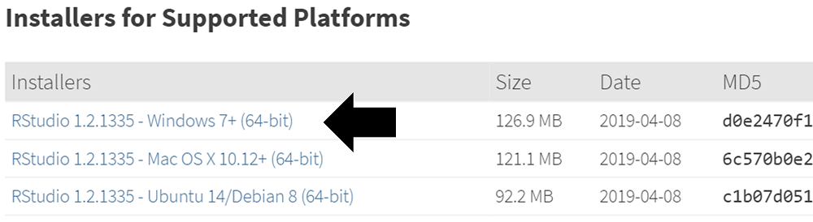
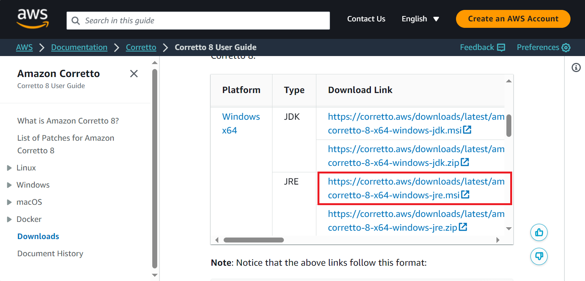
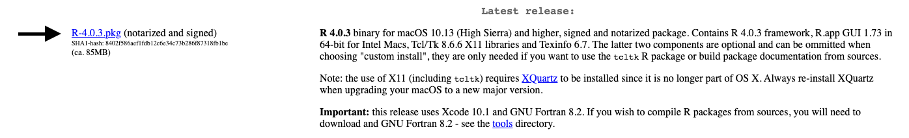
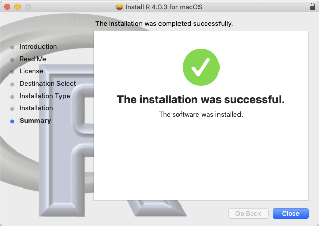
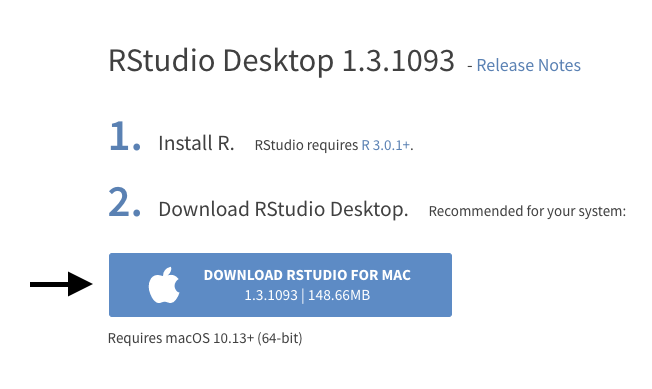
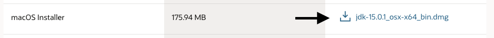

Setting up the R environment
Here are the steps for installing the required environment to run the OHDSI R packages. Four things needs to be installed:
- R is a statistical computing environment. It comes with a basic user interface that is primarily a command-line interface.
- RTools is a set of programs that is required on Windows to build R packages from source.
- RStudio is an IDE (Integrated Development Environment) that makes R easier to use. It includes a code editor, debugging and visualization tools. Please use it to obtain a nice R experience.
- Java is a computing environment that is needed to run some of the components in the OHDSI R packages, for example those needed to connect to a database.
Instructions for Windows
These instructions are also demonstrated in this video, showing a step-by-step guide to installing the required software.
Installing R
Go to https://cran.r-project.org/, click on ‘Download R for Windows’, then ‘base’, then click the Download link indicated in the screenshot below.

After the download has completed, run the installer. Use the default options everywhere, with two exceptions: First, it is better not to install into program files. Instead, just make R a subfolder of your C drive as shown below. Second, to avoid problems due to differing architectures between R and Java, disable the 32-bit architecture as also shown below. 

Once completed, you should be able to select R from your Start Menu.
Installing RTools
Go to https://cran.r-project.org/, click on ‘Download R for Windows’, then ‘Rtools’, and select the very latest version of RTools to download.
After downloading has completed run the installer. Select the default options everywhere.
Since R v4.0.0 you also need to add the following line to your .Renviron file, as described on the RTools page:
PATH="${RTOOLS40_HOME}\usr\bin;${PATH}"
Installing RStudio
Go to https://www.rstudio.com/, select ‘Download RStudio’ (or the ‘Download’ button under ‘RStudio’), opt for the free version, and download the installer for Windows as highlighted below. 
After downloading, start the installer, and use the default options everywhere.
Installing Java
Go to https://java.com/en/download/manual.jsp, and select the Windows 64-bit installer as highlighted below. If you also installed the 32-bit version of R, you must also install the other (32-bit) version of Java. 
After downloading just run the installer.
Instructions for Mac
Installing R
Go to https://cran.r-project.org/, click on ‘Download R for (Mac) OS X’, then ‘base’, then click the Download link indicated in the screenshot below.

After the download has completed, run the installer and accept all of the default options. You should see a screen indicating that the installation was successful.

Installing R build tools
We will need to install C and Fortran compilers in order to build R packages from source code. These are included with Xcode which can be downloaded from the Mac App store.
Open the App Store in Mac OS and install Xcode. Xcode is a large program. If disk space is scarce you could also try only installing Xcode command line tools by following the instructions here. Verify that the C compiler gcc is installed by opening the terminal and running the command
clang. You should see an error that says “no input files”.Download and install the gfortran compiler .dmg from https://github.com/fxcoudert/gfortran-for-macOS/releases. Choose the latest version that is compatible with your operating system. Verify the installation by opening the terminal and running the command
gfortran. You should see an error that says “no input files”.Go to https://www.xquartz.org/, download the .dmg and run the installer.
Verify that build tools are installed and available by opening an R console and running
install.packages("pkgbuild")
pkgbuild::check_build_tools()Installing RStudio
- Go to https://www.rstudio.com/, select ‘Download RStudio’ (or the ‘Download’ button under ‘RStudio’), opt for the free version, and download the installer for Mac as highlighted below. 
Installing Java
Go to https://www.oracle.com/java/technologies/javase-jdk15-downloads.html, and select the Mac OS installer for the Oracle JDK as highlighted below. 
After downloading just run the installer. Check that java is installed by opening the terminal and running the command
java. If you see some helpful output about usage then the installation was successful.
Verifying the installation
You should now be ready to go, but we should make sure. Start R-studio, and type
install.packages("SqlRender")
library(SqlRender)
translate("SELECT TOP 10 * FROM person;", "postgresql")## [1] "SELECT * FROM person LIMIT 10;"This function uses Java, so if all goes well we know both R and Java have been installed correctly!
Another test is to see if source packages can be built. Run the following R code to install the CohortMethod package from the OHDSI GitHub repository:
install.packages("remotes")
remotes::install_github("OHDSI/CohortMethod")